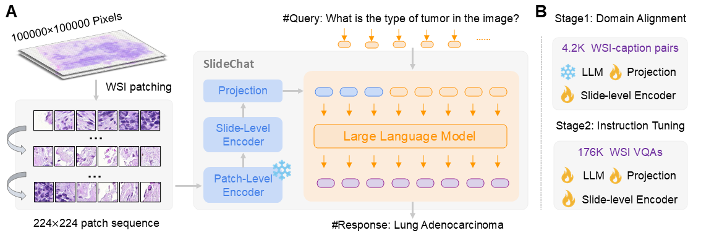

🚀[2025-2-27]: Accepted by CVPR2025! 🌟
🚀[2024-10-24]: We have released our paper! 🌟
🚀[2024-11-07]: We have released SlideBench-VQA(BCNB)! 🌟
Despite the progress made by multimodal large language models (MLLMs) in computational pathology, they remain limited by a predominant focus on patchlevel analysis, missing essential contextual information at the whole-slide level. The lack of large-scale instruction datasets and the gigapixel scale of whole slide images (WSIs) pose significant developmental challenges. In this paper, we present SlideChat, the first vision-language assistant capable of understanding gigapixel whole-slide images, exhibiting excellent multimodal conversational capability and response complex instruction across diverse pathology scenarios. To support its development, we created SlideInstruction, the largest instructionfollowing dataset for WSIs consisting of 4.2K WSI captions and 176K VQA pairs with multiple categories. Furthermore, we propose SlideBench, a multimodal benchmark that incorporates captioning and VQA tasks to assess SlideChat’s capabilities in varied clinical settings such as microscopy, diagnosis. Compared to both general and specialized MLLMs, SlideChat exhibits exceptional capabilities, achieving state-of-the-art performance on 18 of 22 tasks. For example, it achieved an overall accuracy of 81.17% on SlideBench-VQA (TCGA), and 54.15% on SlideBench-VQA (BCNB). We will fully release SlideChat, SlideInstruction and SlideBench as open-source resources to facilitate research and development in computational pathology.
SlideChat serializes each input WSI into a sequence of 224×224 patches, converting each into visual embeddings with a patch-level encoder. A slide-level encoder then interacts with these features to generate contextual embeddings. Then, a multimodal projector maps the visual features from the slide-level encoder into a unified space, aligned seamlessly with the LLM. SlideChat was trained for two stages: Cross-Domain Alignment and Visual Instruction Learning.
(A) Overview of the SlideInstruction generation pipeline. We prompt GPT-4 to extract the WSI-Caption, Open-set VQA and Closed-set VQA from reports. (B) For the generated Closed-set VQA, we employ LLMs to filter low-quality QA pairs and involve pathologists for validation, resulting in the creation of SlideBench-VQA. (C) Examples of WSI caption and instruction-following scenarios in microscopy, diagnostics, and clinical applications.
Examples of generated structural VQAs in pathology across Microscopy, Diagnosis, and Clinical scenarios.
SlideInstruction To support the training of SlideChat, we develop SlideInstruction, a comprehensive instruction dataset, sourced from the TCGA database, comprising 4,915 whole slide image (WSI)-report pairs from 4,028 patients. For the refined pathology reports, we further employ GPT-4 to generate high-quality multimodal data, comprising two main components: (1) WSI-Caption Data. (2) WSI Instruction-Following Data: we structure these questions into three “broad” categories—microscopy, diagnosis, and clinical considerations—which represent key stages in the pathology workflow, and thirteen “narrow” categories focusing on specific aspects within each stage. Consequently, we construct a large-scale training set named SlideInstruction, comprising 4,181 WSI captions and 175,753 instruction-following VQA pairs across various broad and narrow categories.
SlideBench To systematically evaluate the performance of SlideChat, We incorporate the 734 WSI captions along with a substantial number of closed-set VQA pairs to establish evaluation benchmark. To improve the quality of the testing benchmarks, we employ four advanced large language models to filter closed-set VQAs by predicting answers based solely on the question text. Five expert pathologists are invited to review and amend the remaining questions. Consequently, the SlideBench-VQA (TCGA) comprises 7,827 VQAs across 13 categories. Additionally, we incorporate the in-the-wild Early Breast Cancer Core-Needle Biopsy (BCNB) WSI dataset and integrate it into SlideBench as an external subset, named SlideBench-VQA (BCNB). This dataset comprises 7,247 VQA pairs from 1,058 patients, specifically designed to evaluate SlideChat’s zero-shot generalization capability across 7 distinct classification tasks.
@article{chen2024slidechat,
title={SlideChat: A Large Vision-Language Assistant for Whole-Slide Pathology Image Understanding},
author={Chen, Ying and Wang, Guoan and Ji, Yuanfeng and Li, Yanjun and Ye, Jin and Li, Tianbin and Zhang, Bin and Pei, Nana and Yu, Rongshan and Qiao, Yu and Junjun He},
journal={arXiv preprint arXiv:2410.11761},
year={2024}
}
}